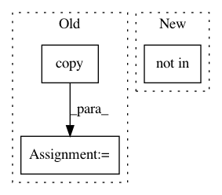

dd2907ed70a9f29ecbe2fba75de735e96daae3a2,mmdet/ops/nms/nms_wrapper.py,,soft_nms,#Any#Any#Any#Any#Any#,32
Before Change
if isinstance(dets, torch.Tensor):
_dets = dets.detach().cpu().numpy()
else:
_dets = dets.copy()
assert isinstance(_dets, np.ndarray)
new_dets, inds = cpu_soft_nms(
_dets, Nt=Nt, method=method, sigma=sigma, threshold=min_score)
After Change
type(dets)))
method_codes = {"linear": 1, "gaussian": 2}
if method not in method_codes:
raise ValueError("Invalid method for SoftNMS: {}".format(method))
new_dets, inds = cpu_soft_nms(
dets_np,
In pattern: SUPERPATTERN
Frequency: 3
Non-data size: 3
Instances
Project Name: open-mmlab/mmdetection
Commit Name: dd2907ed70a9f29ecbe2fba75de735e96daae3a2
Time: 2018-11-26
Author: chenkaidev@gmail.com
File Name: mmdet/ops/nms/nms_wrapper.py
Class Name:
Method Name: soft_nms
Project Name: Scitator/catalyst
Commit Name: 4176e012d583f0afddfe2da28963f492585ffa2c
Time: 2020-07-05
Author: dimdoroshenko@gmail.com
File Name: catalyst/contrib/dl/callbacks/periodic_loader_callback.py
Class Name: PeriodicLoaderCallback
Method Name: on_epoch_end
Project Name: home-assistant/home-assistant
Commit Name: a19e7ba3f16bb8057e6db348356525f4562b91ec
Time: 2017-06-10
Author: danielperna84@gmail.com
File Name: homeassistant/components/homematic.py
Class Name:
Method Name: _system_callback_handler